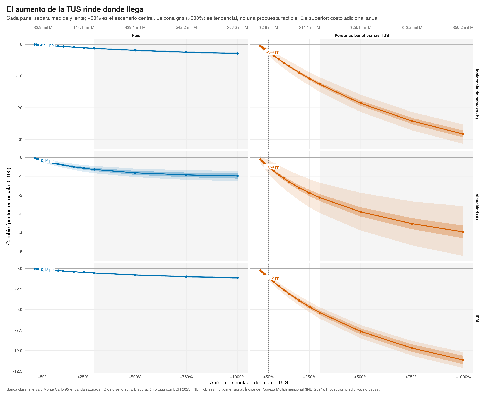
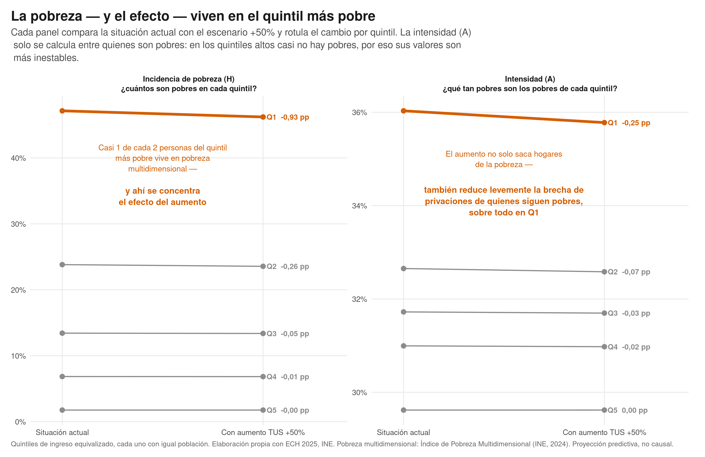
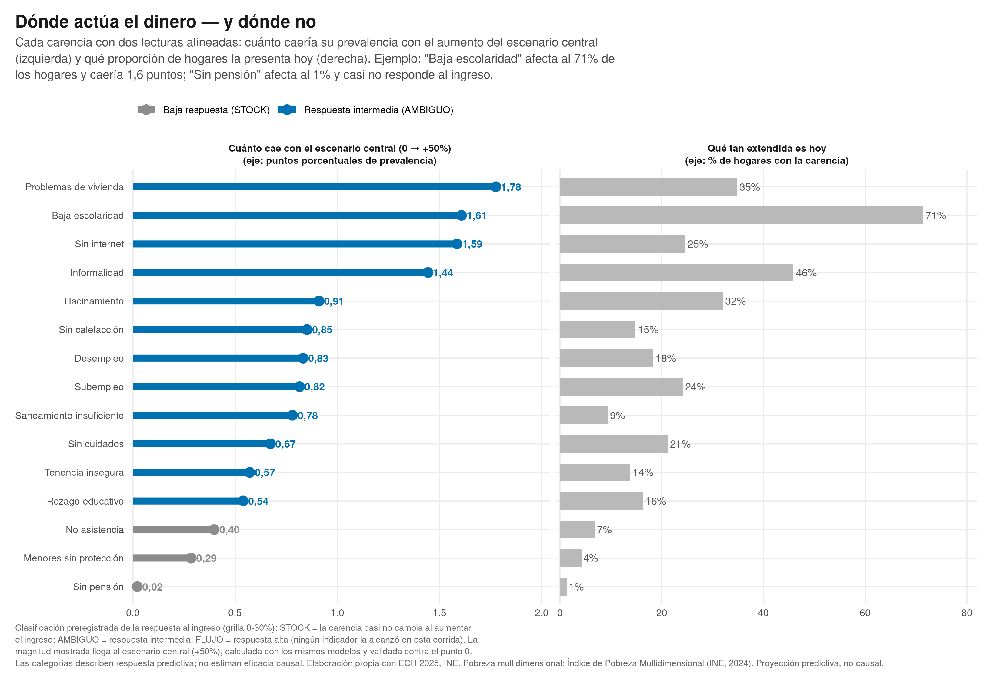
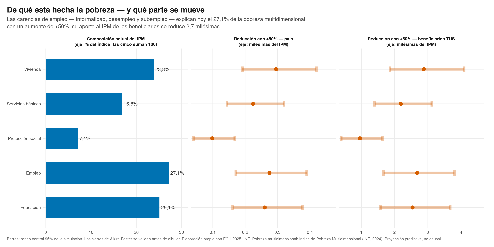
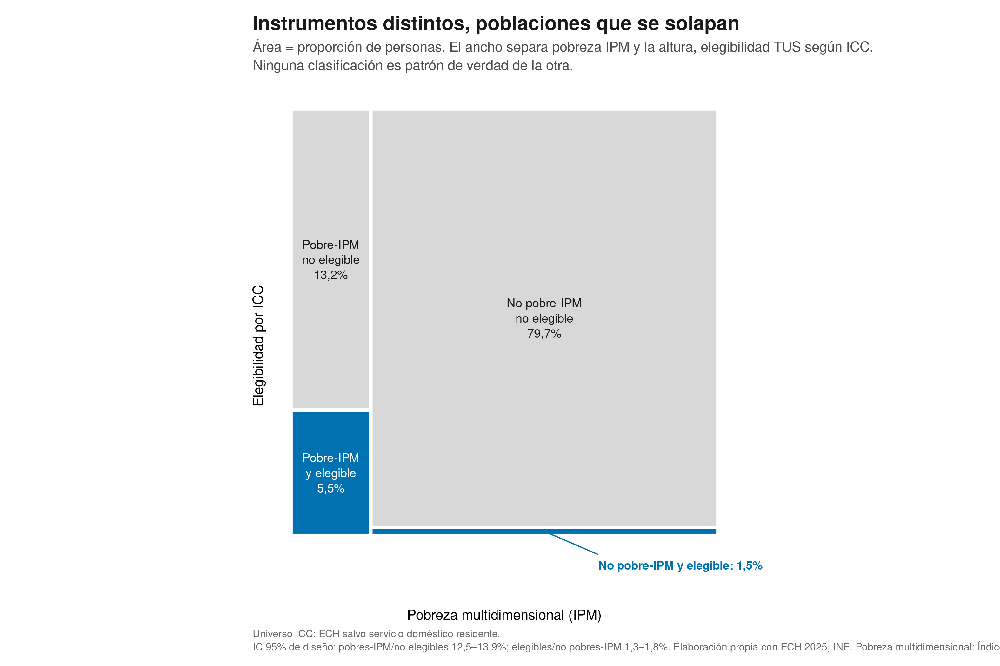
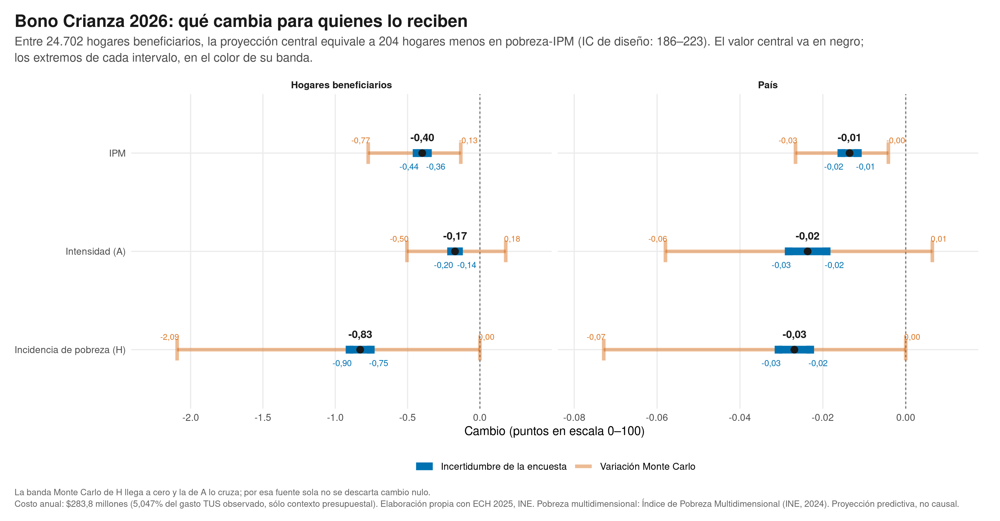
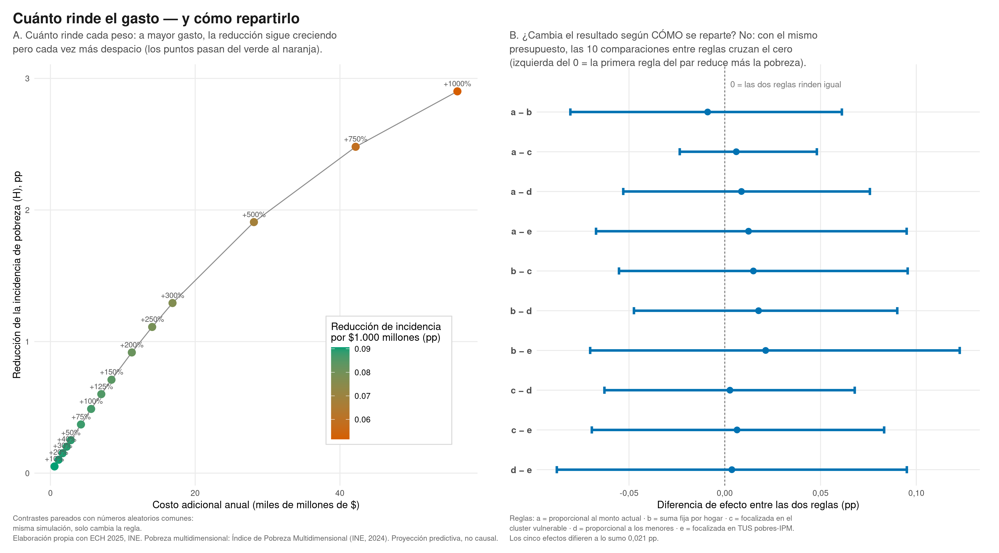
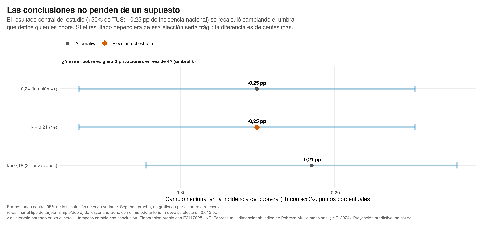
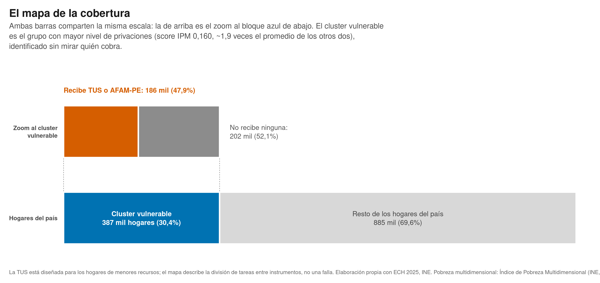
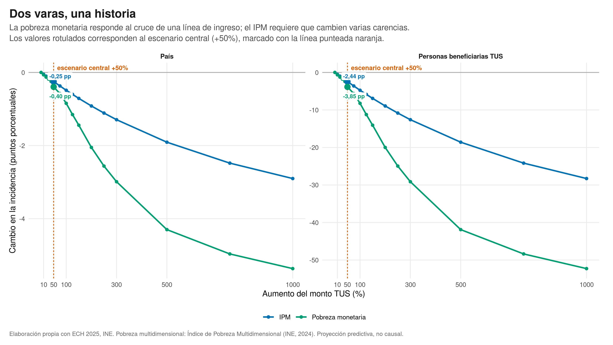

-

1El aumento rinde donde llega
Las tres métricas por tamaño de aumento, en dos lentes: el efecto nacional es el de beneficiarios diluido en proporción exacta a la cobertura.
-

2La pobreza — y el efecto — viven en el quintil más pobre
Casi la mitad del quintil 1 está en pobreza multidimensional, y el efecto del aumento se concentra casi exclusivamente ahí.
-

3Dónde actúa el dinero — y dónde no
Doce carencias responden al ingreso; tres casi no lo hacen y piden políticas sectoriales: el límite honesto de la transferencia.
-

4De qué está hecha la pobreza — y qué parte se mueve
El aporte de cada dimensión al índice — empleo y educación encabezan — y cuánto reduce cada una el escenario central.
-

5Instrumentos distintos, poblaciones que se solapan
El índice con el que se focaliza y el que mide la pobreza clasifican parecido pero no igual — por diseño, no por error.
-

6Bono Crianza 2026: qué cambia para quienes lo reciben
La política ya decidida: ~204 de los 24.702 hogares beneficiarios dejarían la pobreza multidimensional; ambas incertidumbres excluyen el cero.
-

7Cuánto rinde el gasto — y cómo repartirlo
La eficiencia cae con dosis mayores; a presupuesto fijo, las reglas de reparto son indistinguibles entre sí. El cuánto importa; el cómo, casi no.
-

8Las conclusiones no penden de un supuesto
El resultado central recalculado cambiando el umbral que define quién es pobre: las diferencias son de centésimas.
-

9El mapa de la cobertura
Del grupo más vulnerable (387 mil hogares), 47,9% recibe TUS o AFAM-PE: división de tareas entre instrumentos, no una falla.
-

10Dos varas, una historia
La pobreza monetaria responde más rápido por definición; el IPM exige que cambien las privaciones concretas. Por eso es la vara principal del estudio.